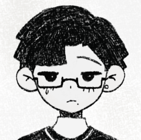

Portfolio · 2026

Kyle 카일
Just an amateur tech tinkerer with a deep interest in Free and Open-Source Software (FOSS), having been drawn to its philosophy, communities, and contributions to tech and the wider-world. Currently, I'm experimenting with various Free & Open-Source Software, as well as researching deep into FOSS philosophy and contributions to a more free and just world.
ScrollAbout
I'm Kyle 카일 — an amateur tech tinkerer with a deep interest in Free and Open-Source Software. I'm drawn to its philosophy, its communities, and its contributions to tech and the wider world.
I'm a Universal Blue fan and a student at the University of Hawaiʻi at Mānoa. Right now I'm experimenting with various FOSS projects and researching FOSS philosophy and its contributions to a more free and just world.
Currently
- Building This portfolio, plus juiceit and WARPTux — small shell installers, GPL-3.0
- Learning Open-Source!
- Listening for better ways to do things :)